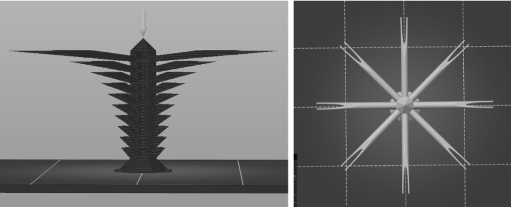
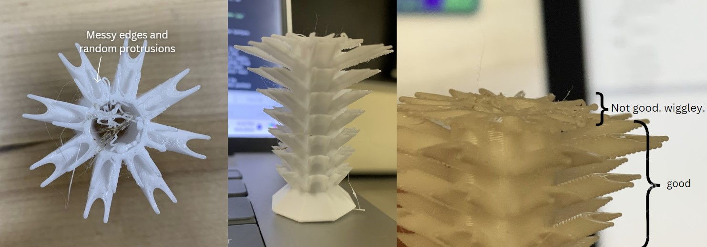

The nametags!
I printed my first nametag at the makerlab the day before class. Everything went smoothly - it was super easy, and the result was basically perfect, I even got to use some especially pretty colors. I used their computers, and with only two other people learning alongside me, the whole experience was very relaxed.
My second print was a bit more interesting. I wanted to make the nametag smaller since I keep it on my keychain, and the original size was rather bulky. However, I ran into an issue. When I tried to shrink it down, the multicolored design disappeared - it would only print in a single color, as opposed to the base being one color with the letters another. But when I made it slightly bigger, the multicolor option returned.
So, I printed it! Unexpectedly, the first two layers of the letters were the same as the base color, and only the next two used the alternate color. Thus, I hypothesized that the way the design controlled color was through a height threshold: at a certain height, the print switches color, rather than switching after completing one component of the design. This should typically work, as it’s typically printed at just one size. I tested this idea by comparing the two nametags side by side. Both had a base color which stopped at the same height, ignoring the other structural aspects of the nametags, supporting my hypothesis.
Another thing to note was that the little one seemed to have more visible stringing, but I don’t really care about stringing here, so that’s ok.
The torture test :0
Prediction: My hypothesis is that the print will fail in a couple of ways! First, the overhang will fail - not at the bottom, as the overhang isn’t at a particularly dramatic angle, but instead, further near the top (perhaps the third spike from the top or so). I definitely think it will fail before the ends get super thin, where they look to be equivalent to one or two layers or plastic. I think it will droop down badly, if not failing into spaghetti, at the two-pronged bits up top. I would be really surprised if the printer can handle such thin and pushed out structures.
 The modelObservations: A few failure modes occurred!
My predictions were partially right. Interestingly, the first failure began on the spike I predicted. It failed with drooping. The underside of the spike looked beaded, and some spikes quickly became round. Also, random oval-like protrusions came out from where there weren’t even meant to be spikes.
A couple more things happened, though I don’t know the order in which the issues occurred. The print detached from the bed and ended up stuck to the nozzle - definitely not good. Additionally, there were some nice gloop-esque tendrils extruded around the inside, a few areas slightly burnt.
In addition, I learned that the 3MF format is editable, rather than just storing the surface of a model. It can store a lot of metadata, like color, material, and information about slicing. And, according to the glorious internet, since STL files rely on triangles, they often have less precision and are less efficient. While 3MF is better in a lot of ways, the main upside to STL seems to be that it’s basically universal - older printers may not understand 3MF.
